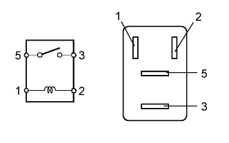
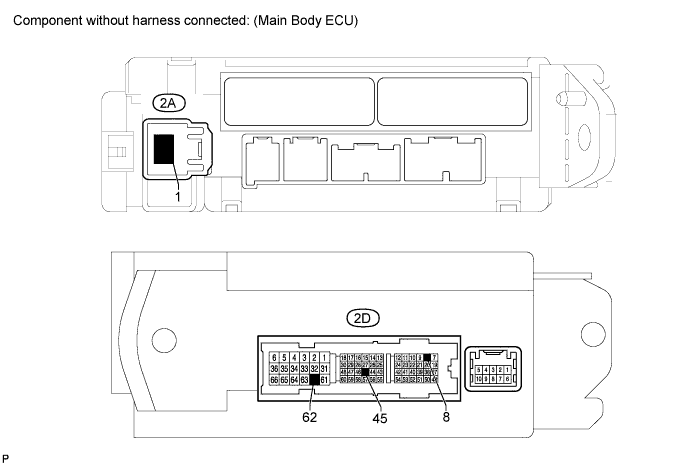

RELAY > ON-VEHICLE INSPECTION |
| 1. INSPECT STARTER RELAY (ST) |
 |
Measure the resistance according to the value(s) in the table below.
| Tester Connection | Condition | Specified Condition |
| 3 - 5 | Battery voltage not applied to terminals 1 and 2 | 10 kΩ or higher |
| Battery voltage applied to terminals 1 and 2 | Below 1 Ω |
| 2. INSPECT STARTER CUT RELAY (ST CUT) |
Measure the resistance according to the value(s) in the table below.
| Tester Connection | Condition | Specified Condition |
| 3 - 5 | Battery voltage not applied to terminals 1 and 2 | 10 kΩ or higher |
| Battery voltage applied to terminals 1 and 2 | Below 1 Ω |
| 3. INSPECT MAIN BODY ECU (ACC RELAY) |

Measure the resistance of the ACC relay circuit.
Measure the resistance according to the value(s) in the table below.
| Tester Connection | Condition | Specified Condition |
| 2A-1 - 2D-8 | Battery voltage not applied between 2D-45 and 2D-62 | 10 kΩ or higher |
| Battery voltage applied between 2D-45 and 2D-62 | Below 1 Ω |